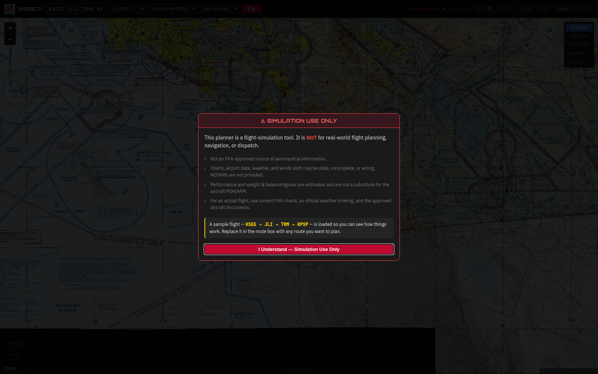
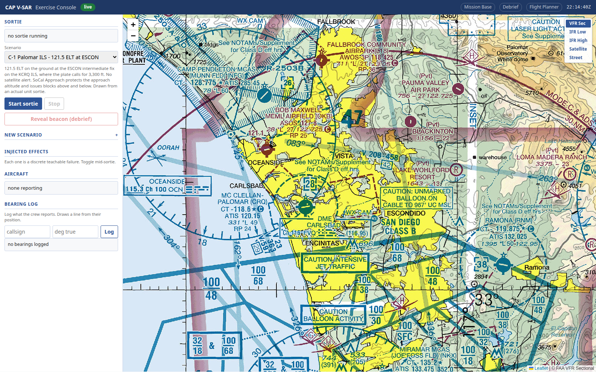

Execute full-fidelity Search and Rescue Exercises on a monthly training cadence. Simulate the complete Incident Command System (ICS) structure—connecting pilots, observers, radio operators, and command staff across in-person squadron hangars, hybrid hubs, or 100% virtual distributed networks with real-time CalTopo integration.
In-person flight training at the squadron hangar is optimal. But in the real world, fuel budgets, maintenance groundings, weather cancellations, and aircraft availability restrict units to quarterly or biannual SAREX events. CAP V-SAR removes the bottleneck.
| Training Dimension | Traditional Live Aircraft SAREX | CAP V-SAR Distributed SAREX |
|---|---|---|
| Training Cadence | Quarterly or Biannual Constrained by corporate aircraft allocation and weekend weather. |
Monthly or Bi-Weekly On-Demand Run evening drills or full-day Saturday exercises anytime. |
| Operational Cost | $3,500 – $6,000+ per weekend 100LL avgas ($6.50+/gal), engine reserves, maintenance wear. |
$0 Fuel Cost Operates on existing squadron PCs, personal laptops, and tablets. |
| Weather & Safety Risk | High Weather Cancellation Rate Low ceilings, turbulence, or mountain downdrafts ground fleets. Real mountain canyon DF homing carries inherent flight risk. |
100% Fleet & Weather Availability Zero risk. Aircrews practice low-altitude canyon homing, box canyon turns, and wing blanking safely in software. |
| Incident Command (ICS) Rigor | Fragmented Command Staff Base staff often idle waiting for aircraft transit; Form 110 logging practice limited by sparse transmissions. |
Continuous Full-Mesh Command Simulation Realistic multi-station radio workload, authentic stuck-mic drills, real-time bearing plotting, and Form 110 audits. |
| Debrief & Learning Value | Subjective & Memory-Based Crews discuss what they think happened 2 hours after engine shutdown; exact beacon coordinates rarely replayed against tracks. |
Objective GPS Telemetry Debrief Scrub second-by-second flight paths, heading vectors, altitude profiles, and LOP bearings against ground truth beacon location. |
All participants collocated at the squadron hangar or composite facility.
Incident Command Post assembled at base; aircrews and ground teams participate from home or remote stations.
Zero physical travel required. Every crew member connects over secure WireGuard VPN or Caddy HTTPS.
CAP V-SAR is not an isolated flight simulator—it is a full-theater command exercise. Every participant occupies a defined FEMA ICS seat with authentic tools, communications channels, and operational responsibilities.
Establishes incident objectives, authorizes search areas, oversees safety, and coordinates with the Air Force Rescue Coordination Center (AFRCC) and County Sheriff.
Assigns search grids, manages loiter fuel endurance, deconflicts multiple aircraft altitudes (e.g. 5,500 ft vs 6,500 ft MSL), and reviews automated telemetry debriefs.
Calculate Probability of Detection (POD), build Incident Action Plans (IAPs), and dispatch ground assets based on airborne bearing vectors.
Primary tactical net controller. Operates the Web Base Radio console (/radio) on CAP tactical VHF-FM channels. Enforces radiotelephone doctrine (CAPR 100-3).
Airband watch controller. Monitors VHF-AM aeronautical search frequencies (123.100 MHz SAR, 122.900 MHz flight line) and logs pilot transit check-ins.
Every station check-in, OPS NORMAL report, bearing transmission, and altitude change is recorded in real time with UTC timestamps for formal post-mission audit.
Fly the C182T Skylane through search patterns, execute steep-turn heading corrections called by the MO, manage engine cooling, and maintain ATC separation.
Operate the Becker 517 / RT-600 DF heads and TDFM-136B tactical radio. Track 406 burst cadences, verify station passage over beacons, and call coordinates.
Mobile vehicle and foot search teams connected via smartphone Web PTT. Receive airborne bearing lines and conduct final ground signal homing.

CalTopo is the gold-standard mapping tool used across Civil Air Patrol, county search-and-rescue teams, and state emergency services. CAP V-SAR integrates directly with CalTopo to maintain a unified, real-time Common Operating Picture.
CAP V-SAR comes pre-loaded with comprehensive exercise scenarios designed to test aircrews, radio operators, and command staff under authentic stress conditions.
A non-flight-plan Cessna 172 fails to arrive at Borrego Valley. AFRCC reports a single COSPAS-SARSAT 406 composite alert in rugged terrain east of Palomar Mountain.
Multi-station wide-area coordination across San Diego and Riverside counties utilizing authentic California Wing high-elevation repeaters.
Airborne crew isolates beacon to a 1-square-mile grid sector and guides a mobile ground Urban Direction Finding (UDF) vehicle team in for physical recovery.
An observer microphone gets wedged between cockpit seats, keying the primary VHF-FM net and threatening to jam critical mission communications.
*** TIME OUT ***.
Setting up a distributed exercise takes less than 60 seconds. The Exercise Director opens /setup, selects the participating fleet, and generates unique scannable access codes for every seat.
N499CP, N99885), callsigns, and DF heads.
INSTR-1), Pilots (PLT-423), Observers (OBS-423), MROs (MRO-1), and UDF Teams (UDF-1).
